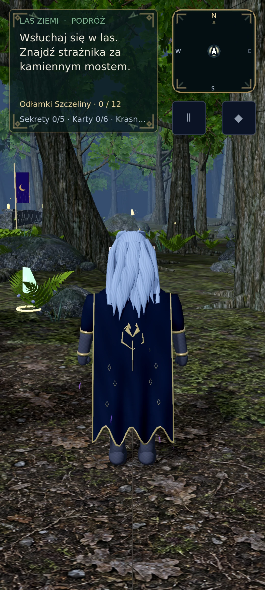
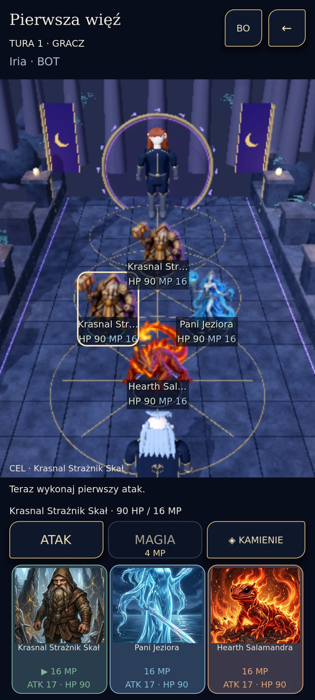

W rozwoju
Vaeloria
Działający prototyp gry fantasy: eksploracja 3D, kolekcja istot, turowa walka, dziesięciu rywali AI, sześć strategii i lokalny turniej. Rozgrywka ma konkretne raporty desktopowe i fizycznego Androida.
Przygodowy świat, kolekcja stworzeń i walka potrzebują wspólnego postępu oraz oprawy, która mieści się w budżecie telefonu.
- Godot4.6.3.NET
- C# / klient net9.0
- Domain/Application/Infrastructure net8.0
- GL Compatibility

IDEA / ZASTOSOWANIE
Od potrzeby do produktu.
Problem
Przygodowy świat, kolekcja stworzeń i walka potrzebują wspólnego postępu oraz oprawy, która mieści się w budżecie telefonu.
Dla kogo
- Gracze zainteresowani eksploracją fantasy i taktycznymi pojedynkami
- Uczestnicy prywatnych testów rozwijanej gry
Rozwiązanie
Klient Godot integruje postać EOS, onboarding, kampanię Ziemi, las 3D, lokalne pojedynki i turnieje z jednym silnikiem domenowym. JSON zapisuje profil i oddzielną historię rywalizacji. Osobne API kont oraz czatu istnieje, ale nie realizuje multiplayerowej walki.
Dlaczego powstał
Połączyć podróż bohatera EOS, odkrywanie świata i budowanie drużyny stworzeń w jednym doświadczeniu.
ARCHITEKTURA / POŁĄCZENIA
Technologia pod powierzchnią.
Natywny klient Godot 4.6.3 .NET/net 9.0. Osobne biblioteki Domain, Application i Infrastructure na net 8.0 oddzielają reguły walki/karty/AI od scen i renderowania. Lokalne profile oraz rywalizacja używają JSON i atomowych adapterów plikowych. Osobne API ASP.NET Core/EFCore/PostgreSQL obsługuje konto, sesje, portal i Signal R chat. Offline AI nie wymaga serwera walk; Remote Player Agent jest rozłączony, więc implementacji kont/czatu nie wolno przedstawiać jako Pv P.
FUNKCJE / POTWIERDZONY ZAKRES
Zaprojektowane do działania.
- Kreator EOS z imieniem, fryzurą, kolorem włosów, strojem i aurą; onboarding, wybór starterów i samouczek prowadzą do rzeczywistej kampanii. [1]
- Eksploracja 3D: chód/bieg, kamera ze spring arm i kolizją, sterowanie klawiaturą, myszą i dotykiem; las zawiera ścieżki, mosty i interakcje. [1]
- Minimapa odkrywa sektory i znaczniki, zapisuje postęp oraz rozróżnia zebrane obiekty. Skrytki i diamenty aktualizują rzeczywistą kolekcję i zasoby po udanym zapisie. [1]
- Turowy Combat Engine rozstrzyga ataki, zdolności, MP, obrażenia, relacje żywiołów i statusy oraz odrzuca akcje niezgodne z aktywną turą. [1]
- Dziesięciu lokalnych rywali ma własne tożsamości EOS, drużyny i trudności. Sześć strategii to Aggressive, Defensive, Balanced, Control, Support i Elemental Specialist; wagi wpływają na wybory, nie dodają ukrytych bonusów statystyk. [1]
- Human i AI przekazują wersjonowane komendy do tej samej sesji pojedynku. Obserwacja AI zawiera własną rękę i ujawnione przywołania przeciwnika; Remote jest obecnie odłączonym adapterem. [1]
- Lokalna liga liczy punkty z faktycznych wyników; turniej wymaga ośmiu różnych AI i rozgrywa siedmiomeczową drabinkę. Replay komend weryfikuje wynik; remis lub limit jawnie zatrzymuje drabinkę. [1]
- Iria, Sylvara i Veyron wędrują po trzech autorskich trasach lasu, zatrzymują się blisko gracza i udostępniają wejście do lokalnego pojedynku. Oddalone rigi są usypiane; brak symulowania walk w tle eksploracji. [1]
- Arena jest sceną 3D z przeciwnymi EOS i Portalem Więzi. Przywołania, efekty zdolności i reakcje odczytują stan silnika; prezentacja nie uruchamia ponownie reguł walki. [1]
- Plansza ma 25 kryształów w układzie 5×5. Gracz wybiera łańcuch, a domena sprawdza sąsiedztwo i dozwolone efekty; soczewki kryształów są wspólnym widokiem kampanii i pojedynków. [1]
- Profil JSONV1, checkpointy i nagrody zapisują się atomowo z kopią poprzedniego zapisu; ukończone węzły i rejestry łupów chronią przed powtórnym odbiorem. Zapis nie jest snapshotem trwającej walki. [1]
- Zaimplementowano API rejestracji/logowania, rotację sesji i refresh, wylogowanie oraz klienta konta. Jest to odrębny system od zapisu i gry offline. [1]
- Czat globalny wykorzystuje Signal R i PostgreSQL, historię, zgłoszenia wiadomości oraz blokowanie użytkowników; nie jest dowodem sieciowej rozgrywki Pv P. [1]
- Profile Low/Medium/High ograniczają koszt prezentacji, a Reduce Motion redukuje ruch ambientów. Efekty lasu stosują Multi Mesh, odległość i frustum zamiast osobnej ciężkiej sceny dla minimapy. [1]
Wyniki i granice weryfikacji
- Kod obecnego checkoutu potwierdza 10 rywali,6 strategii,3 leśnych wędrowców,turniej 8 AI i 25 kryształów. To inwentaryzacja implementacji, a nie nowa sesja gameplayu.
- Odczytano historyczny plik 270 symulacji:156Side AWins/114Side BWins,270Replay Verified=true. Nie uruchamiano ponownie symulatora.
- Odczytano raport fizycznego OPPO:18 kontroli, pełne zwycięstwa i siedmiomeczowy turniej; odrębne dane konkretnego APK.
- Najpóźniejszy raport EOS13.10 zachowuje osobne ograniczenia sztuki i performance; późniejsza publiczna dystrybucja 14.10 nie nadaje automatycznie PASS nowemu APK ani Windows.
PRAWDZIWE EKRANY / BEZ MAKIET
Zajrzyj do środka.
Rzeczywiste materiały z produktu. Wybierz obraz, aby go powiększyć. W podglądzie użyj strzałek; Escape zamyka powiększenie.



STAN PRODUKTU
Produkt, platformy, dostępność.
Produkt
- Zakres funkcjonalny
- Grywalny prototyp 3D
- Dystrybucja
- Udokumentowane lokalne i historycznie publiczne preview Android/Windows; APKdebug/Windows unsigned. Bez deklaracji sklepowego wydania ani finalnego odbioru platform.
- Produkcja
- Publiczna witryna i wybrane preview miały historycznie potwierdzone wdrożenie 14.10.2026. Finalna produkcyjna gra, publiczne Pv P i kompletna bramka nowych artefaktów nie są potwierdzone.
Linux desktop
- Implementacja
- Natywny klient Godot i środowisko deweloperskie; rzeczywiste sceny gry.
- Weryfikacja
- Historyczne natywne testy Godot i .NET; najnowszy 13.10 pass dotyczy konkretnych zakresów EOS/lasu/kreatora i wizualnej areny, nie pełnego nowego release gate.
- Dystrybucja
- Projekt i lokalne buildy; nie potwierdzano osobnego publicznego instalatora Linux.
- Otwarte kwestie
- Docelowa oprawa/animacje i długotrwały performance gate otwarte.
Android
- Implementacja
- APK arm 64,pl.progresskit.vaeloria,1.3.0-preview.3/code 6; obsługa dotyku i lokalnego zapisu.
- Weryfikacja
- Historyczne fizyczne OPPO12.10 obejmuje las, pojedynek i turniej; fizyczne Redmi 13.10 opisuje własny kontrolowany przebieg. Każdy wynik związany z odrębnym hashem APK.
- Dystrybucja
- Historycznie publiczny debug-signed preview APK14.10. Publiczny plik po sanitizacji symboli ma oddzielny status fizyczny NOT_VERIFIED.
- Otwarte kwestie
- Nie przenosić PASS starego APK na obecny kod lub publicznego kandydata. Brak wydania sklepowego i pełnego długiego testu termicznego.
Windows x64
- Implementacja
- Rzeczywisty portable folder,ZIP i NSIS installer; self-contained runtime.
- Weryfikacja
- Historyczna walidacja statyczna 20PASS/0FAIL/3NOT_VERIFIED. Fizyczny Windows runtime i instalacja NOT_VERIFIED; UI approval PENDING.
- Dystrybucja
- Historycznie udostępniony unsigned preview setup z 10.10; wcześniejszy zakres niż galeria Android.
- Otwarte kwestie
- Podpis/Smart Screen oraz rzeczywista instalacja/odinstalowanie/uruchomienie wymagają odbioru.
WWW / API
- Implementacja
- Strona produktu i pliki preview, API konta/portalu/czatu. Brak grywalnego klienta Godot w przeglądarce.
- Weryfikacja
- Historyczna bramka publicznej strony 14.10:186HTTP i 29Chrome. Lokalny backend ma starsze rzeczywiste testy PostgreSQL/Kestrel, a późniejsze zestawy pomijały 7 integracji bez bazy.
- Dystrybucja
- Strona publiczna i preview historycznie wdrożone; stan bieżący nieodświeżony w tym audycie.
- Otwarte kwestie
- Publiczny landing nie dowodzi gotowości produkcyjnej gry, API ani Pv P.
WERYFIKACJA / DATY / ŚRODOWISKA
Dowody z kontekstem.
Każdy wynik dotyczy wskazanego zakresu i środowiska. Odczyt kodu potwierdza implementację; nie zastępuje uruchomienia produktu.
PASS · · Wynik historyczny
Domain 192/Application 269/API2;7APIintegracji pominięto bez testowej bazy. · AI arena — .NET
463 PASS / 0 FAIL / 7 SKIP. 7SKIP nie jest PASS. Nie sumować z późniejszym powtórzeniem 463.
Środowisko: Linux/Godot 4.6.3 .NET
Rewizja:baza a77edc4,checkpoint f50d7b6; kod sprintu w ówczesnym dirtyworktree· ŹródłoPASS · · Wynik historyczny
Las→pojedynek→powrót→turniej,układy/kampania/prezentacja i część screenshot assertions. · AI arena — natywne scenariusze Godot
867 PASS / 0 FAIL / 0 SKIP. Liczba asercji harnessów,nie 867 odrębnych sesji gracza.
Środowisko: Linux/Godot 4.6.3 .NET
Rewizja:Rewizja historycznego przebiegu nie została utrwalona.· ŹródłoPASS · · Wynik historyczny
270 meczów;156A/114B,bez remisu/limitu/nielegalnego ruchu,270 replay. · AI arena — symulator i replay
270 PASS / 0 FAIL / 0 SKIP. Historyczne symulacje; ponowny audyt tylko odczytał spójność danych.
Środowisko: Linux/Godot 4.6.3 .NET
Rewizja:Rewizja historycznego przebiegu nie została utrwalona.· ŹródłoPASS · · Wynik historyczny
Dotyk,rozstawienie,portal,magia,wyjście,zwycięstwa,liga 8 AI/7 meczów,trwałość po restarcie. · Fizyczne OPPO — AI arena
18 PASS / 0 FAIL / 0 SKIP. Nie Windows ani obecny publiczny APK;krótki Low 59.4FPS nie jest pełnym performance gate.
Środowisko: OPPOCPH2525/Android 15;APKsha ecfae 0 f 2 b 6 ca 0 c 20 cf 86 d 4412673 b 6 b 8694 d 3 b 0 a 5 ccf 12967 c 60 f 87770799566
Rewizja:Rewizja historycznego przebiegu nie została utrwalona.· ŹródłoPASS · · Wynik historyczny
Łupy/zapis/pojedynek 482,las 106,mosty/woda 29. · Earth Forest 2 — natywne scenariusze Godot
617 PASS / 0 FAIL / 0 SKIP. Oddzielny późniejszy zestaw od 867AIarena; nie sumować historycznych przebiegów.
Środowisko: Linux/Godot 4.6.3 .NET
Rewizja:baza f5c3ca4a74e243e95bc5994cd8d62308281230a7;implementacja a7df436801302d29223d2ffd2ada64fcee8ae765· ŹródłoPASS · · Wynik historyczny
27Domain i 34Application:EOS/save/livingidentity/presentationplayback. · EOS3D — wybrane regresje .NET
61 PASS / 0 FAIL / 0 SKIP. Filtrowany zakres;nie nowy pełny test API/gry.
Środowisko: Linux/Godot 4.6.3 .NET
Rewizja:Rewizja historycznego przebiegu nie została utrwalona.· ŹródłoPASS · · Wynik historyczny
EOS1254,las 106,arena visual-only 67,kreator 156,eksploracja 148,reload 9. · EOS3D — natywne regresje Godot
1740 PASS / 0 FAIL / 0 SKIP. Arena 67 to visual-only,nie pełny pojedynek. Performance 12 kontroli osobno,pełna bramka NOT_VERIFIED.
Środowisko: Linux/Godot 4.6.3 .NET
Rewizja:Rewizja historycznego przebiegu nie została utrwalona.· ŹródłoPASS · · Wynik historyczny
PE/runtime/PCK/ZIP i rzeczywiste rozpakowanie NSIS;208 plików zgodnych. · Kandydat Windows — statyczna walidacja
20 PASS / 0 FAIL / liczba pominięć nieustalona. 3 NOT_VERIFIED,Windows runtime/installer nieodebrane;niepodpisany preview.
Środowisko: Linux;statyczna kontrola eksportu Winx64
Rewizja:0af3c84eff005eb64d9e721da516d532b3c5eb13 +dirtysnapshot· ŹródłoPASS · · Wynik historyczny
Anonimowa strona/zasoby/downloady/Range i izolacja prywatnych tras. · Publiczna strona — HTTP productiongate
186 PASS / 0 FAIL / 0 SKIP. Nie produkcyjna jakość gry ani aktualny status hosta.
Środowisko: Historyczne anonimowe HTTPS;bez odświeżenia 02.11
Rewizja:0716317aeb73e328c515504056f6eece669d8eb3 +niecommitowany publicrelease· ŹródłoPASS · · Wynik historyczny
5 szerokości,galeria,Escape/focus,reducedmotion,console/images/overflow. · Publiczna strona — Chrome
29 PASS / 0 FAIL / 0 SKIP. Nie świeży test portfolio/Godot 02.11.
Środowisko: Historyczny produkcyjny Chrome
Rewizja:Rewizja historycznego przebiegu nie została utrwalona.· ŹródłoNOT RUN · · Przegląd bieżący
Read-only kod/Git/raporty/artefakty. · Nowy gameplay/inferencja/urządzenia w audycie
Wynik dotyczy wyłącznie opisanego zakresu. Nie uruchamiano Godota,telefonu,Windows ani serwera.
Środowisko: Linux/Godot 4.6.3 .NET
Rewizja:Rewizja historycznego przebiegu nie została utrwalona.· ŹródłoNOT RUN · · Przegląd bieżący
Przegląd bieżącego zakresu implementacji i granic dostępności.
Odczyt źródeł nie zastępuje uruchomienia aplikacji, testów urządzeń ani potwierdzenia produkcji.
Środowisko: Audyt źródeł i dostępnej dokumentacji.
Rewizja:0716317aeb73e328c515504056f6eece669d8eb3 + lokalne zmiany robocze· Źródło
WYZWANIA INŻYNIERYJNE
Decyzje, które robią różnicę.
Lokalna liga potrzebuje wyników wynikających z rzeczywistych walk i możliwych do odtworzenia.
- Wyzwanie
- Lokalna liga potrzebuje wyników wynikających z rzeczywistych walk i możliwych do odtworzenia.
- Analiza
- Kod turnieju wywołuje wspólną sesję walki i sprawdza zapisane komendy.
- Przyczyna
- Historia wyników i rozgrywka muszą zachować ten sam wynik dla tych samych komend.
- Decyzja i poprawka
- Turniej ośmiu AI rozgrywa siedem meczów, a zapis wyniku przechodzi replay; nierozstrzygnięty mecz zatrzymuje drabinkę.
- Weryfikacja
- Raport z 12.10.2026 opisuje 270 symulacji i fizyczny turniej konkretnego APK. W audycie odczytano dane, bez nowej rozgrywki.
- Wynik
- Istnieje lokalna liga i turniej z weryfikacją wyników; nie jest to sieciowe PvP.
- Źródło
- vaeloria-case01
ROZWÓJ / OTWARTE KIERUNKI
Następne kroki.
Grywalny prototyp 3D · Udokumentowane lokalne i historycznie publiczne preview Android/Windows; APKdebug/Windows unsigned. Bez deklaracji sklepowego wydania ani finalnego odbioru platform.
Do potwierdzenia lub ukończenia
- Finalne assety EOS/świata/istot, rig/animacje i zgodność artystyczna z docelowym kierunkiem.
- Powtarzalne profile performance, długie trasy i test termiczny zamiast krótkich nieruchomych próbek FPS.
- Odbiór nowego publicznego APK na urządzeniu i fizyczna instalacja/runtime Windows.
- Siedem integracji API pominiętych w późniejszych zestawach wymaga izolowanego PostgreSQL.
- Pv P i sieciowe sterowanie walką pozostają przyszłym zakresem; konto/czat nie zamykają tej bramki.
- Pozostałe światy, szersza kampania, ekonomia i finalny balans to rozwój poza obecnym Lasem Ziemi.
Planowane kierunki
- Dalsza rozbudowa krain po stabilizacji istniejącej eksploracji
- Docelowe modele, rigging i animacje EOS oraz stworzeń
- Długie, porównywalne próby wydajności i pamięci na urządzeniach
- Rozwój funkcji online oddzielnie od lokalnej ligi i turniejów
DYSTRYBUCJA / KONTAKT
Poznaj projekt bliżej.
Etap i zakres dostępności
Udokumentowane lokalne i historycznie publiczne preview Android/Windows; APKdebug/Windows unsigned. Bez deklaracji sklepowego wydania ani finalnego odbioru platform.
Działający prototyp gry fantasy: eksploracja 3D, kolekcja istot, turowa walka, dziesięciu rywali AI, sześć strategii i lokalny turniej. Rozgrywka ma konkretne raporty desktopowe i fizycznego Androida.
TRANSPARENTNOŚĆ
Podstawa prezentacji.
Zakres ustalono na podstawie kodu i materiałów wymienionych poniżej. Wyniki historycznych testów zachowują datę oraz zakres; nie oznaczają ponownego testu ani potwierdzenia produkcji.
Źródła i rewizje (27)
- Vaeloria: źródła funkcji 01 · code ·
0716317aeb73e328c515504056f6eece669d8eb3 + lokalne zmiany robocze
Odczyt źródeł 02.11.2026: Kreator EOS z imieniem, fryzurą, kolorem włosów, strojem i aurą; onboarding, wybór starterów i samouczek prowadzą do rzeczywistej kampanii. - Vaeloria: źródła funkcji 02 · code ·
0716317aeb73e328c515504056f6eece669d8eb3 + lokalne zmiany robocze
Odczyt źródeł 02.11.2026: Eksploracja 3D: chód/bieg, kamera ze spring arm i kolizją, sterowanie klawiaturą, myszą i dotykiem; las zawiera ścieżki, mosty i interakcje. - Vaeloria: źródła funkcji 03 · code ·
0716317aeb73e328c515504056f6eece669d8eb3 + lokalne zmiany robocze
Odczyt źródeł 02.11.2026: Minimapa odkrywa sektory i znaczniki, zapisuje postęp oraz rozróżnia zebrane obiekty. Skrytki i diamenty aktualizują rzeczywistą kolekcję i zasoby po udanym zapisie. - Vaeloria: źródła funkcji 04 · code ·
0716317aeb73e328c515504056f6eece669d8eb3 + lokalne zmiany robocze
Odczyt źródeł 02.11.2026: Turowy Combat Engine rozstrzyga ataki, zdolności, MP, obrażenia, relacje żywiołów i statusy oraz odrzuca akcje niezgodne z aktywną turą. - Vaeloria: źródła funkcji 05 · code ·
0716317aeb73e328c515504056f6eece669d8eb3 + lokalne zmiany robocze
Odczyt źródeł 02.11.2026: Dziesięciu lokalnych rywali ma własne tożsamości EOS, drużyny i trudności. Sześć strategii to Aggressive, Defensive, Balanced, Control, Support i Elemental Specialist; wagi wpływają na wybory, nie dodają ukrytych bonusów statystyk. - Vaeloria: źródła funkcji 06 · code ·
0716317aeb73e328c515504056f6eece669d8eb3 + lokalne zmiany robocze
Odczyt źródeł 02.11.2026: Human i AI przekazują wersjonowane komendy do tej samej sesji pojedynku. Obserwacja AI zawiera własną rękę i ujawnione przywołania przeciwnika; Remote jest obecnie odłączonym adapterem. - Vaeloria: źródła funkcji 07 · code ·
0716317aeb73e328c515504056f6eece669d8eb3 + lokalne zmiany robocze
Odczyt źródeł 02.11.2026: Lokalna liga liczy punkty z faktycznych wyników; turniej wymaga ośmiu różnych AI i rozgrywa siedmiomeczową drabinkę. Replay komend weryfikuje wynik; remis lub limit jawnie zatrzymuje drabinkę. - Vaeloria: źródła funkcji 08 · code ·
0716317aeb73e328c515504056f6eece669d8eb3 + lokalne zmiany robocze
Odczyt źródeł 02.11.2026: Iria, Sylvara i Veyron wędrują po trzech autorskich trasach lasu, zatrzymują się blisko gracza i udostępniają wejście do lokalnego pojedynku. Oddalone rigi są usypiane; brak symulowania walk w tle eksploracji. - Vaeloria: źródła funkcji 09 · code ·
0716317aeb73e328c515504056f6eece669d8eb3 + lokalne zmiany robocze
Odczyt źródeł 02.11.2026: Arena jest sceną 3D z przeciwnymi EOS i Portalem Więzi. Przywołania, efekty zdolności i reakcje odczytują stan silnika; prezentacja nie uruchamia ponownie reguł walki. - Vaeloria: źródła funkcji 10 · code ·
0716317aeb73e328c515504056f6eece669d8eb3 + lokalne zmiany robocze
Odczyt źródeł 02.11.2026: Plansza ma 25 kryształów w układzie 5×5. Gracz wybiera łańcuch, a domena sprawdza sąsiedztwo i dozwolone efekty; soczewki kryształów są wspólnym widokiem kampanii i pojedynków. - Vaeloria: źródła funkcji 11 · code ·
0716317aeb73e328c515504056f6eece669d8eb3 + lokalne zmiany robocze
Odczyt źródeł 02.11.2026: Profil JSONV1, checkpointy i nagrody zapisują się atomowo z kopią poprzedniego zapisu; ukończone węzły i rejestry łupów chronią przed powtórnym odbiorem. Zapis nie jest snapshotem trwającej walki. - Vaeloria: źródła funkcji 12 · code ·
0716317aeb73e328c515504056f6eece669d8eb3 + lokalne zmiany robocze
Odczyt źródeł 02.11.2026: Zaimplementowano API rejestracji/logowania, rotację sesji i refresh, wylogowanie oraz klienta konta. Jest to odrębny system od zapisu i gry offline. - Vaeloria: źródła funkcji 13 · code ·
0716317aeb73e328c515504056f6eece669d8eb3 + lokalne zmiany robocze
Odczyt źródeł 02.11.2026: Czat globalny wykorzystuje Signal R i PostgreSQL, historię, zgłoszenia wiadomości oraz blokowanie użytkowników; nie jest dowodem sieciowej rozgrywki Pv P. - Vaeloria: źródła funkcji 14 · code ·
0716317aeb73e328c515504056f6eece669d8eb3 + lokalne zmiany robocze
Odczyt źródeł 02.11.2026: Profile Low/Medium/High ograniczają koszt prezentacji, a Reduce Motion redukuje ruch ambientów. Efekty lasu stosują Multi Mesh, odległość i frustum zamiast osobnej ciężkiej sceny dla minimapy. - Vaeloria: przegląd zakresu 02.11.2026 · report ·
0716317aeb73e328c515504056f6eece669d8eb3 + lokalne zmiany robocze
Odczyt kodu, dokumentacji i zapisanych dowodów. Nie jest nowym testem produktu ani wdrożenia. - Vaeloria: historyczny raport weryfikacji 01 · report ·
baza a77edc4,checkpoint f50d7b6; kod sprintu w ówczesnym dirtyworktree
Domain 192/Application 269/API2;7APIintegracji pominięto bez testowej bazy. - Vaeloria: historyczny raport weryfikacji 02 · report ·
Rewizja historycznego przebiegu nie została utrwalona.
Las→pojedynek→powrót→turniej,układy/kampania/prezentacja i część screenshot assertions. - Vaeloria: historyczny raport weryfikacji 03 · report ·
Rewizja historycznego przebiegu nie została utrwalona.
270 meczów;156A/114B,bez remisu/limitu/nielegalnego ruchu,270 replay. - Vaeloria: historyczny raport weryfikacji 04 · report ·
Rewizja historycznego przebiegu nie została utrwalona.
Dotyk,rozstawienie,portal,magia,wyjście,zwycięstwa,liga 8 AI/7 meczów,trwałość po restarcie. - Vaeloria: historyczny raport weryfikacji 05 · report ·
baza f5c3ca4a74e243e95bc5994cd8d62308281230a7;implementacja a7df436801302d29223d2ffd2ada64fcee8ae765
Łupy/zapis/pojedynek 482,las 106,mosty/woda 29. - Vaeloria: historyczny raport weryfikacji 06 · report ·
Rewizja historycznego przebiegu nie została utrwalona.
27Domain i 34Application:EOS/save/livingidentity/presentationplayback. - Vaeloria: historyczny raport weryfikacji 07 · report ·
Rewizja historycznego przebiegu nie została utrwalona.
EOS1254,las 106,arena visual-only 67,kreator 156,eksploracja 148,reload 9. - Vaeloria: historyczny raport weryfikacji 08 · report ·
0af3c84eff005eb64d9e721da516d532b3c5eb13 +dirtysnapshot
PE/runtime/PCK/ZIP i rzeczywiste rozpakowanie NSIS;208 plików zgodnych. - Vaeloria: historyczny raport weryfikacji 09 · report ·
0716317aeb73e328c515504056f6eece669d8eb3 +niecommitowany publicrelease
Anonimowa strona/zasoby/downloady/Range i izolacja prywatnych tras. - Vaeloria: historyczny raport weryfikacji 10 · report ·
Rewizja historycznego przebiegu nie została utrwalona.
5 szerokości,galeria,Escape/focus,reducedmotion,console/images/overflow. - Vaeloria: kontrola weryfikacji 11 · report ·
Rewizja historycznego przebiegu nie została utrwalona.
Read-only kod/Git/raporty/artefakty. - Vaeloria: analiza implementacji 01 · report ·
0716317aeb73e328c515504056f6eece669d8eb3 + lokalne zmiany robocze
Studium implementacji na podstawie kodu i wskazanych raportów; ograniczenia uruchomienia są jawne.